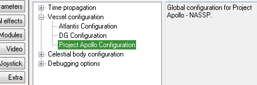

今回は、Apollo 7 Virtual AGC LVDC++ - Launchのシナリオを使用します。※
※現時点では、アポロ7号・8号の打ち上げシナリオしか正常に動作しません
LaunchpadのModulesタブで、DX9ExtMFDかExtMFDにチェックを入れる。
ゲームを開始したら、F1を押して2Dコクピット視点にする。
Ctrl + F4を同時押しして、DX9 External MFDを選択してOKをクリック。
SELをクリックして、Project Apollo Checklistを選択。
FLSHをクリックして、FLASH: ONにする。
チェックリストの1行目に表示された動作を実行する。
Ctrl + 矢印キーの同時押しでパネルを移動して、黄色の枠で囲まれたボタンをクリックする。
パネルの番号は、チェックリストの各行の一番右に書かれている。
Panel Controls and Displays (CSM) - ProjectApollo
同じパネルでの操作が続く場合、2行目以降はパネルの番号が表示されない。
MFD右側のUP or DNボタンでリストをスクロールして、戻って番号を確認することができる。
また、DSKY・Master Alarmなどの場合は番号が表示されない。
DSKY（アポロ航法コンピュータ(AGC)の表示･入力インターフェース）
Display and Keyboard Assembly - ProjectApollo
Master Alarm
スイッチにカバーが付いている場合は、右クリックでカバーを開閉する。
EMSのこのボタンを使って数字を入力するときは、右クリックを使うと微調整できる。
Entry Monitoring System - ProjectApollo
番号が表示されても操作しなくてよい（目視確認だけ）場合もある。
チェックリストの途中で詰まってしまった場合は、MFDのPROボタンでスキップできる。
チェックリストを全自動で実行させて打ち上げることも可能です。
LaunchpadのExtraタブをクリック。
Vessel configurationを選択して、Project Apollo Configurationをダブルクリック。

Virtual AGC Modeタブを開く。
これら2つにチェックを入れてOKをクリック。